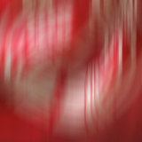
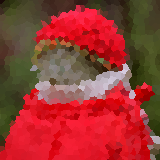
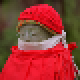
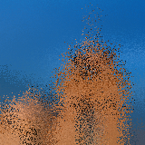
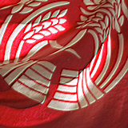
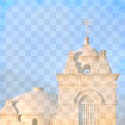

|
→ |
 |
filter.blurHorizontal
blurSize — default = 8 ; min = 2 ; max = 512sigma — default = 128 ; min = 2 ; max = 512
object.fill.effect = "filter.blurHorizontal"
object.fill.effect.blurSize = 20
object.fill.effect.sigma = 140
|
→ |
 |
filter.blurVertical
blurSize — default = 8 ; min = 2 ; max = 512sigma — default = 128 ; min = 2 ; max = 512
object.fill.effect = "filter.blurVertical"
object.fill.effect.blurSize = 20
object.fill.effect.sigma = 140
|
→ |
 |
filter.brightness
intensity — default = 0 ; min = 0 ; max = 1
object.fill.effect = "filter.brightness"
object.fill.effect.intensity = 0.4
 |
→ |
 |
filter.bulge
Provides the illusion of lens bulging by altering eye-ray direction. Intensity of less than 1 makes the effect bulge inward (concave). Intensity greater than 1 makes the effect bulge outward (convex).
intensity — default = 1 ; min = 0 ; max = (none)
object.fill.effect = "filter.bulge"
object.fill.effect.intensity = 1.8
|
→ |
 |
filter.chromaKey
sensitivity — default = 0.4 ; min = 0 ; max = 1smoothing — default = 0.1 ; min = 0 ; max = 1color — default = {1,1,1,1} ; min = {0,0,0,0} ; max = {1,1,1,1}
object.fill.effect = "filter.chromaKey"
object.fill.effect.sensitivity = 0.1
object.fill.effect.smoothing = 0.3
object.fill.effect.color = { 0.2, 0.2, 0.2, 1 }
|
→ |
 |
filter.colorChannelOffset
xTexels — default = 8 ; min = 0 ; max = (none)yTexels — default = 8 ; min = 0 ; max = (none)
object.fill.effect = "filter.colorChannelOffset"
object.fill.effect.xTexels = 16
object.fill.effect.yTexels = 16
|
→ |
 |
filter.colorMatrix
Multiplies a source color and adds an offset (bias) to each color component of an image.
coefficients — a 4×4 matrix of RGB+A coefficients.bias — default = {0,0,0,0} ; min = {-1,-1,-1,-1} ; max = {1,1,1,1}
object.fill.effect = "filter.colorMatrix"
object.fill.effect.coefficients =
{
1, 0, 0, 0, --red coefficients
0, 1, 0, 0, --green coefficients
0, 0, 1, 0, --blue coefficients
0, 0, 0, 1 --alpha coefficients
}
object.fill.effect.bias = { 0.6, 0.1, 0, 0 }
filter.colorPolynomial
Applies a set of cubic polynomials to an image.
coefficients — a 4×4 matrix of RGB+A coefficients.
object.fill.effect = "filter.colorPolynomial"
object.fill.effect.coefficients =
{
0, 0, 1, 0, --red coefficients
0, 0, 1, 0, --green coefficients
0, 1, 0, 0, --blue coefficients
0, 0, 0, 1 --alpha coefficients
}
|
→ |
 |
filter.contrast
contrast — default = 1 ; min = 0 ; max = 4
object.fill.effect = "filter.contrast"
object.fill.effect.contrast = 2
|
→ |
 |
filter.crosshatch
grain — default = 0 ; min = 0 ; max = (none)
object.fill.effect = "filter.crosshatch"
object.fill.effect.grain = 4
 |
→ |
 |
filter.crystallize
numTiles — default = 16 ; min = 2 ; max = (none)
object.fill.effect = "filter.crystallize"
object.fill.effect.numTiles = 32
filter.desaturate
intensity — default = 0.5 ; min = 0 ; max = 1
object.fill.effect = "filter.desaturate"
object.fill.effect.intensity = 0.5
|
→ |
 |
filter.dissolve
threshold — default = 1 ; min = 0 ; max = 1
object.fill.effect = "filter.dissolve"
object.fill.effect.threshold = 0.6
filter.duotone
Increases the tonal range of a grayscale image by using different colors to reproduce distinct gray levels.
darkColor — default = {0,0,0.5,1} ; min = {0,0,0,0} ; max = {1,1,1,1}lightColor — default = {1,0,0,1} ; min = {0,0,0,0} ; max = {1,1,1,1}
object.fill.effect = "filter.duotone"
object.fill.effect.darkColor = { 0.7, 0.3, 0.3, 1 }
object.fill.effect.lightColor = { 1, 0.6, 0.4, 1 }
|
→ |
 |
filter.emboss
intensity — default = 1 ; min = 0 ; max = 4
object.fill.effect = "filter.emboss"
object.fill.effect.intensity = 0.2
filter.exposure
exposure — default = 0 ; min = -10 ; max = 10
object.fill.effect = "filter.exposure"
object.fill.effect.exposure = 1.2
|
→ |
 |
filter.frostedGlass
scale — default = 64 ; min = 1 ; max = (none)
object.fill.effect = "filter.frostedGlass"
object.fill.effect.scale = 140
|
→ |
 |
filter.grayscale
object.fill.effect = "filter.grayscale"
|
→ |
 |
filter.hue
angle — default = 0 ; min = 0 ; max = 360
object.fill.effect = "filter.hue"
object.fill.effect.angle = 200
|
→ |
 |
filter.invert
object.fill.effect = "filter.invert"
|
→ |
 |
filter.iris
center — default = {0.5,0.5} ; min = {0,0} ; max = {1,1}aperture — default = 0 ; min = 0 (closed) ; max = 1 (open)aspectRatio — default = 1 ; min = 0 ; max = (none)smoothness — default = 0 ; min = 0 ; max = 1
object.fill.effect = "filter.iris"
object.fill.effect.center = { 0.5, 0.5 }
object.fill.effect.aperture = 0.5
object.fill.effect.aspectRatio = ( object.width / object.height )
object.fill.effect.smoothness = 0.5
|
→ |
 |
filter.levels
white — default = 0.843 ; min = 0 ; max = 1black — default = 0.565 ; min = 0 ; max = 1gamma — default = 1 ; min = 0 ; max = 1
object.fill.effect = "filter.levels"
object.fill.effect.white = 0.5
object.fill.effect.black = 0.1
object.fill.effect.gamma = 1
|
→ |
 |
filter.linearWipe
direction — default = {1,0} ; min = {-1,-1} ; max = {1,1}smoothness — default = 0 ; min = 0 ; max = 1progress — default = 0 ; min = 0 ; max = 1
object.fill.effect = "filter.linearWipe"
object.fill.effect.direction = { 1, 1 }
object.fill.effect.smoothness = 1
object.fill.effect.progress = 0.5
|
→ |
 |
filter.monotone
r — default = 0 ; min = 0 ; max = 1g — default = 0 ; min = 0 ; max = 1b — default = 0 ; min = 0 ; max = 1a — default = 1 ; min = 0 ; max = 1
object.fill.effect = "filter.monotone"
object.fill.effect.r = 1
object.fill.effect.g = 0.2
object.fill.effect.b = 0.5
object.fill.effect.a = 0.5
|
→ |
 |
filter.opTile
numPixels — default = 8 ; min = 0 ; max = (none)angle — default = 0 ; min = 0 ; max = 360scale — default = 2.8 ; min = 0 ; max = (none)
object.fill.effect = "filter.opTile"
object.fill.effect.numPixels = 4
object.fill.effect.angle = 0
object.fill.effect.scale = 3
|
→ |
 |
filter.pixelate
numPixels — default = 4 ; min = 0 ; max = (none)
object.fill.effect = "filter.pixelate"
object.fill.effect.numPixels = 4
|
→ |
 |
filter.polkaDots
numPixels — default = 4 ; min = 4 ; max = (none)dotRadius — default = 1 ; min = 0 ; max = 1aspectRatio — default = 1 ; min = 0 ; max = (none)
object.fill.effect = "filter.polkaDots"
object.fill.effect.numPixels = 16
object.fill.effect.dotRadius = 1
object.fill.effect.aspectRatio = ( object.width / object.height )
filter.posterize
colorsPerChannel — default = 4 ; min = 2 ; max = (none)
object.fill.effect = "filter.posterize"
object.fill.effect.colorsPerChannel = 6
|
→ |
 |
filter.radialWipe
center — default = {0.5,0.5} ; min = {-1,-1} ; max = {1,1}smoothness — default = 0 ; min = 0 ; max = 1axisOrientation — default = 0 ; min = 0 ; max = 1progress — default = 0 ; min = 0 ; max = 1
object.fill.effect = "filter.radialWipe"
object.fill.effect.center = { 0.3, 0.5 }
object.fill.effect.smoothness = 1
object.fill.effect.axisOrientation = 0
object.fill.effect.progress = 0.5
|
→ |
 |
filter.saturate
intensity — default = 1 ; min = 0 ; max = 8
object.fill.effect = "filter.saturate"
object.fill.effect.intensity = 4
|
→ |
 |
filter.scatter
intensity — default = 0.5 ; min = 0 ; max = (none)
object.fill.effect = "filter.scatter"
object.fill.effect.intensity = 0.5
|
→ |
 |
filter.sepia
intensity — default = 1 ; min = 0 ; max = 1
object.fill.effect = "filter.sepia"
object.fill.effect.intensity = 1
|
→ |
 |
filter.sharpenLuminance
sharpness — default = 0 ; min = 0 ; max = 1
object.fill.effect = "filter.sharpenLuminance"
object.fill.effect.sharpness = 1
|
→ |
 |
filter.sobel
object.fill.effect = "filter.sobel"
|
→ |
 |
filter.straighten
width — default = 1 ; min = 1 ; max = (none)height — default = 1 ; min = 1 ; max = (none)angle — default = 0 ; min = 0 ; max = 360
object.fill.effect = "filter.straighten"
object.fill.effect.width = 10
object.fill.effect.height = 40
object.fill.effect.angle = 20
|
→ |
 |
filter.swirl
intensity — default = 0 ; min = 0 ; max = (none)
object.fill.effect = "filter.swirl"
object.fill.effect.intensity = 0.4
|
→ |
 |
filter.vignette
radius — default = 0.1 ; min = 0 ; max = 1
object.fill.effect = "filter.vignette"
object.fill.effect.radius = 0.1
|
→ |
|
filter.vignetteMask
innerRadius — default = 0.8 ; min = 0 ; max = 1outerRadius — default = 0.25 ; min = 0 ; max = 1
object.fill.effect = "filter.vignetteMask"
object.fill.effect.innerRadius = 0.7
object.fill.effect.outerRadius = 0.1
filter.wobble
amplitude — default = 10 ; min = (none) ; max = (none)
object.fill.effect = "filter.wobble"
object.fill.effect.amplitude = 80
|
→ |
 |
filter.woodCut
intensity — default = 0.5 ; min = 0 ; max = 1
object.fill.effect = "filter.woodCut"
object.fill.effect.intensity = 0.4
|
→ |
 |
filter.zoomBlur
u (horizontal origin) — default = 0.5 ; min = 0 ; max = 1v (vertical origin) — default = 0.5 ; min = 0 ; max = 1intensity — default = 0.5 ; min = 0 ; max = 1
object.fill.effect = "filter.zoomBlur"
object.fill.effect.u = 0.5
object.fill.effect.v = 0.5
object.fill.effect.intensity = 0.3
Generator Effects
Generator effects are procedurally-generated effects which don’t operate on any textures/images. Instead, they generate textures in the fragment shader.
Like filters, generators are specified by the effect name (string) as the effect property of object.fill or object.stroke:
object.fill.effect = "[generator]"
object.stroke.effect = "[generator]"
Most generators can be adjusted via optional parameters. These parameters, and the acceptable values, vary for each specific generator as defined below.
-- Apply a "sunbeams" generator effect
object.fill.effect = "generator.sunbeams"
object.fill.effect.aspectRatio = ( object.width / object.height )
generator.checkerboard
color1 — default = {1,0,0,1} ; min = {0,0,0,0} ; max = {1,1,1,1}color2 — default = {0,0,1,1} ; min = {0,0,0,0} ; max = {1,1,1,1}xStep — default = 3 ; min = 1 ; max = (none)yStep — default = 3 ; min = 1 ; max = (none)
object.fill.effect = "generator.checkerboard"
object.fill.effect.color1 = { 0.8, 0, 0.2, 1 }
object.fill.effect.color2 = { 0.2, 0.2, 0.2, 1 }
object.fill.effect.xStep = 8
object.fill.effect.yStep = 8
generator.lenticularHalo
Renders a lenticular halo effect on an object. Although the sample image indicates otherwise, this effect is generated with a transparent alpha background. The seed parameter is used by the random algorithm and is provided as a means to vary the look of the halo.
posX — default = 0.5 ; min = 0 ; max = 1posY — default = 0.5 ; min = 0 ; max = 1aspectRatio — default = 1 ; min = 0 ; max = (none)seed — default = 0 ; min = 0 ; max = (none)
object.fill.effect = "generator.lenticularHalo"
object.fill.effect.posX = 0.5
object.fill.effect.posY = 0.5
object.fill.effect.aspectRatio = ( object.width / object.height )
object.fill.effect.seed = 1
generator.linearGradient
color1 — default = {1,0,0,1} ; min = {0,0,0,0} ; max = {1,1,1,1}position1 — default = {0,0} ; min = {0,0} ; max = {1,1}color2 — default = {0,0,1,1} ; min = {0,0,0,0} ; max = {1,1,1,1}position2 — default = {1,1} ; min = {0,0} ; max = {1,1}
object.fill.effect = "generator.linearGradient"
object.fill.effect.color1 = { 0.8, 0, 0.2, 1 }
object.fill.effect.position1 = { 0, 0 }
object.fill.effect.color2 = { 0.2, 0.2, 0.2, 1 }
object.fill.effect.position2 = { 1, 1 }
generator.marchingAnts
object.strokeWidth = 2
object.stroke.effect = "generator.marchingAnts"
generator.perlinNoise
color1 — default = {1,0,0,1} ; min = {0,0,0,0} ; max = {1,1,1,1}color2 — default = {0,0,1,1} ; min = {0,0,0,0} ; max = {1,1,1,1}scale — default = 8 ; min = 0 ; max = (none)
object.fill.effect = "generator.perlinNoise"
object.fill.effect.color1 = { 0.9, 0.1, 0.3, 1 }
object.fill.effect.color2 = { 0.8, 0.8, 0.8, 1 }
object.fill.effect.scale = 12
generator.radialGradient
Renders a radial gradient on an object. The center_and_radiuses parameter is a table which specifies, in order, the center x, center y, inner radius, and outer radius.
color1 — default = {1,0,0,1} ; min = {0,0,0,0} ; max = {1,1,1,1}color2 — default = {0,0,1,1} ; min = {0,0,0,0} ; max = {1,1,1,1}center_and_radiuses — default = {0.5,0.5,0.125,0.25} ; min = {0,0,0,0} ; max = {1,1,1,1}aspectRatio — default = 1 ; min = 0 ; max = (none)
object.fill.effect = "generator.radialGradient"
object.fill.effect.color1 = { 0.8, 0, 0.2, 1 }
object.fill.effect.color2 = { 0.2, 0.2, 0.2, 1 }
object.fill.effect.center_and_radiuses = { 0.5, 0.5, 0.25, 0.75 }
object.fill.effect.aspectRatio = 1
generator.random
object.fill.effect = "generator.random"
generator.stripes
Renders a stripe pattern on an object. The periods parameter is a table which specifies, in order, the width of the first stripe, width of the first empty space, width of the second stripe, and width of the second empty space. The translation parameter specifies the offset position of the pattern.
periods — default = {1,1,1,1} ; min = {0,0,0,0}angle — default = 0 ; min = 0 ; max = 360translation — default = 0 ; min = 0 ; max = (none)
object.fill.effect = "generator.stripes"
object.fill.effect.periods = { 8, 2, 4, 4 }
object.fill.effect.angle = 45
object.fill.effect.translation = 0
generator.sunbeams
Renders a sunbeam effect on an object. Although the sample image indicates otherwise, this effect is generated with a transparent alpha background. The seed parameter is used by the random algorithm and is provided as a means to vary the look of the sunbeam.
posX — default = 0.5 ; min = 0 ; max = 1posY — default = 0.5 ; min = 0 ; max = 1aspectRatio — default = 1 ; min = 0 ; max = (none)seed — default = 0 ; min = 0 ; max = (none)
object.fill.effect = "generator.sunbeams"
object.fill.effect.posX = 0.5
object.fill.effect.posY = 0.5
object.fill.effect.aspectRatio = ( object.width / object.height )
object.fill.effect.seed = 0
Composite Effects
Composite effects operate on two textures/images, combined together as a composite paint. Once defined, this composite paint can be used to fill/stroke an object and apply a composite blend effect. A composite paint can consist of two distinct textures/images or the same texture/image upon itself, depending on the effect you want to achieve.
|
+ |
 |
-- Create the object
local object = display.newRect( 100, 100, 160, 160 )
-- Set up the composite paint (distinct images)
local compositePaint = {
type="composite",
paint1={ type="image", filename="image01.png" },
paint2={ type="image", filename="texture.png" }
}
-- Apply the composite paint as the object's fill
object.fill = compositePaint
-- Set a composite blend as the fill effect
object.fill.effect = "composite.add"
 |
→ |
 |
composite.add
alpha — default = 1 ; min = 0 ; max = 1
object.fill = compositePaint
object.fill.effect = "composite.add"
object.fill.alpha = 1
|
→ |
|
composite.average
alpha — default = 1 ; min = 0 ; max = 1
object.fill = compositePaint
object.fill.effect = "composite.average"
object.fill.alpha = 1
|
→ |
|
composite.colorBurn
alpha — default = 1 ; min = 0 ; max = 1
object.fill = compositePaint
object.fill.effect = "composite.colorBurn"
object.fill.alpha = 1
|
→ |
 |
composite.colorDodge
alpha — default = 1 ; min = 0 ; max = 1
object.fill = compositePaint
object.fill.effect = "composite.colorDodge"
object.fill.alpha = 1
|
→ |
|
composite.darken
alpha — default = 1 ; min = 0 ; max = 1
object.fill = compositePaint
object.fill.effect = "composite.darken"
object.fill.alpha = 1
|
→ |
 |
composite.difference
alpha — default = 1 ; min = 0 ; max = 1
object.fill = compositePaint
object.fill.effect = "composite.difference"
object.fill.alpha = 1
|
→ |
 |
composite.exclusion
alpha — default = 1 ; min = 0 ; max = 1
object.fill = compositePaint
object.fill.effect = "composite.exclusion"
object.fill.alpha = 0.4
|
→ |
|
composite.glow
alpha — default = 1 ; min = 0 ; max = 1
object.fill = compositePaint
object.fill.effect = "composite.glow"
object.fill.alpha = 1
|
→ |
|
composite.hardLight
alpha — default = 1 ; min = 0 ; max = 1
object.fill = compositePaint
object.fill.effect = "composite.hardLight"
object.fill.alpha = 1
|
→ |
 |
composite.hardMix
alpha — default = 1 ; min = 0 ; max = 1
object.fill = compositePaint
object.fill.effect = "composite.hardMix"
object.fill.alpha = 0.2
|
→ |
 |
composite.lighten
alpha — default = 1 ; min = 0 ; max = 1
object.fill = compositePaint
object.fill.effect = "composite.lighten"
object.fill.alpha = 0.8
|
→ |
 |
composite.linearLight
alpha — default = 1 ; min = 0 ; max = 1
object.fill = compositePaint
object.fill.effect = "composite.linearLight"
object.fill.alpha = 0.4
|
→ |
|
composite.multiply
alpha — default = 1 ; min = 0 ; max = 1
object.fill = compositePaint
object.fill.effect = "composite.multiply"
object.fill.alpha = 1
|
→ |
|
composite.negation
alpha — default = 1 ; min = 0 ; max = 1
object.fill = compositePaint
object.fill.effect = "composite.negation"
object.fill.alpha = 0.3
|
→ |
 |
composite.normalMapWith1DirLight
This composite effect renders a directional light upon a surface. In this effect, dirLightDirection is a table containing the light direction in texture space. The origin and the growth direction of each axis is the same as described for pointLightPos in composite.normalMapWith1PointLight. This direction vector indicates where the light is coming from, not the direction in which it’s going. There’s no need to normalize this vector as it’s already done internally.
The dirLightColor parameter is a table containing RGB+A values, and ambientLightIntensity specifies the intensity.
dirLightDirection — default = {1,0,0} ; min = {0,0,0} ; max = {1,1,1}dirLightColor — default = {1,1,1,1} ; min = {0,0,0,0} ; max = {1,1,1,1}ambientLightIntensity — default = 0 ; min = 0 ; max = (none)
object.fill = compositePaint
object.fill.effect = "composite.normalMapWith1DirLight"
object.fill.effect.dirLightDirection = { 1, 0, 0 }
object.fill.effect.dirLightColor = { 0.3, 0.4, 1, 0.8 }
object.fill.effect.ambientLightIntensity = 1
|
→ |
 |
composite.normalMapWith1PointLight
This composite effect renders a point light upon a surface. In this effect, pointLightPos is a table containing the light position in texture space. This {x,y,z} origin is the upper left corner {0,0,0}. Positive x moves to the right, positive y moves towards the bottom, and positive z moves “out of the screen” towards the viewer, representing the distance from the surface. There’s no maximum value for z, but typically this value will be between 0 and 1.
The pointLightColor parameter is a table containing RGB+A values, and ambientLightIntensity specifies the intensity from 0 (dark) to 1 (full brightness).
The attenuationFactors parameter is a table containing the diffuse light’s distance attenuation factors. In this case, {x,y,z} are the constant, linear, and quadratic attenuation factors. Note that distance attenuation does not affect ambient light intensity. For a better understanding of attenuation factors, read about Falloff and Attenuation of Light.
pointLightPos — default = {1,0,0} ; min = {0,0,0} ; max = {1,1,1}pointLightColor — default = {1,1,1,1} ; min = {0,0,0,0} ; max = {1,1,1,1}ambientLightIntensity — default = 0 ; min = 0 ; max = (none)attenuationFactors — default = {0.4,3,20} ; min = {0,0,0}
object.fill = compositePaint
object.fill.effect = "composite.normalMapWith1PointLight"
object.fill.effect.pointLightPos = { 0, 1, 1 }
object.fill.effect.pointLightColor = { 1, 0.4, 0.5, 1 }
object.fill.effect.ambientLightIntensity = 1.2
object.fill.effect.attenuationFactors = { 0.4, 3, 0 }
|
→ |
 |
composite.overlay
alpha — default = 1 ; min = 0 ; max = 1
object.fill = compositePaint
object.fill.effect = "composite.overlay"
object.fill.alpha = 1
|
→ |
 |
composite.phoenix
alpha — default = 1 ; min = 0 ; max = 1
object.fill = compositePaint
object.fill.effect = "composite.phoenix"
object.fill.alpha = 0.5
|
→ |
 |
composite.pinLight
alpha — default = 1 ; min = 0 ; max = 1
object.fill = compositePaint
object.fill.effect = "composite.pinLight"
object.fill.alpha = 1
|
→ |
 |
composite.reflect
alpha — default = 1 ; min = 0 ; max = 1
object.fill = compositePaint
object.fill.effect = "composite.reflect"
object.fill.alpha = 1
|
→ |
 |
composite.screen
alpha — default = 1 ; min = 0 ; max = 1
object.fill = compositePaint
object.fill.effect = "composite.screen"
object.fill.alpha = 1
|
→ |
|
composite.softLight
alpha — default = 1 ; min = 0 ; max = 1
object.fill = compositePaint
object.fill.effect = "composite.softLight"
object.fill.alpha = 1
|
→ |
|
composite.subtract
alpha — default = 1 ; min = 0 ; max = 1
object.fill = compositePaint
object.fill.effect = "composite.subtract"
object.fill.alpha = 0.8
|
→ |
 |
composite.vividLight
alpha — default = 1 ; min = 0 ; max = 1
object.fill = compositePaint
object.fill.effect = "composite.vividLight"
object.fill.alpha = 1
Device-Specific Limitations
Hardware Support
The following visual effects require modern GPUs (Graphics Processing Units) and they may not function properly on all devices.
To check the GPU capabilities of a device, test it via system.getInfo( "gpuSupportsHighPrecisionFragmentShaders" ):
if ( system.getInfo( "gpuSupportsHighPrecisionFragmentShaders" ) ) then
-- This device should support all effects
else
-- This device may have problems with certain effects
end
If the device supports high-precision fragment shaders, you can override the default shader precision for all OpenGL ES shaders as outlined here.
Rendering Execution
Certain parameters have a direct influence on the execution time of an effect. This applies to both the initial rendering and any re-execution events. For example, if an object is moved/transitioned, the effects applied to it are re-executed. Thus, you should be careful when setting the parameters of an effect, especially those like "filter.blurGaussian". If possible, we recommend that you test applicable projects on actual devices.